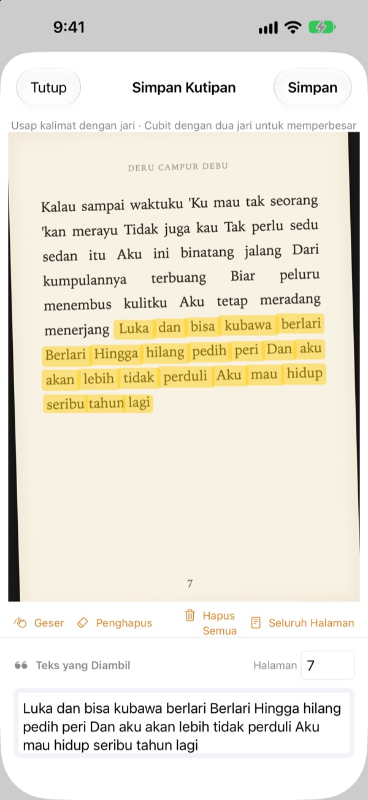
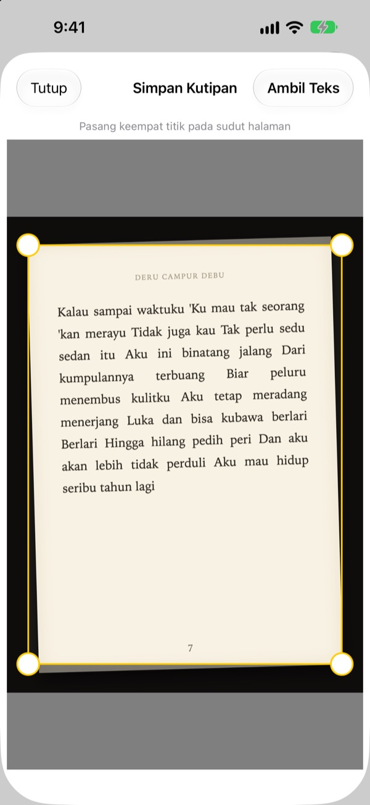
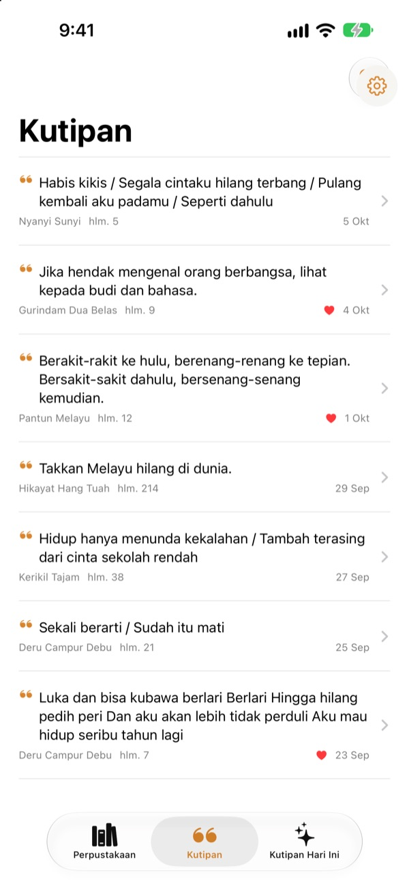
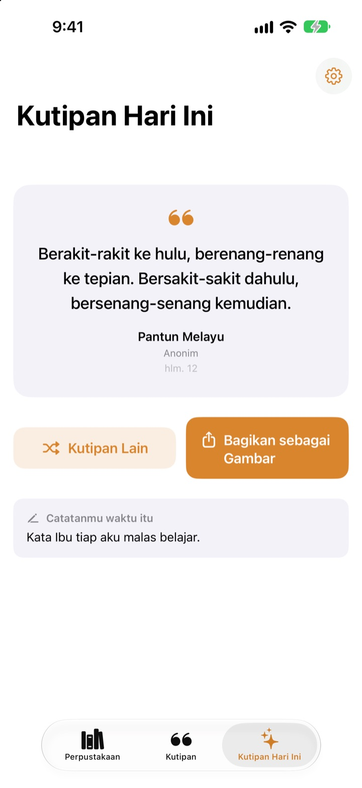

Garis bawahi buku
tanpa pena
Foto halamannya, usap kalimat yang kamu suka dengan jari, dan hanya kalimat itu yang tersimpan sebagai teks. Judul buku dan nomor halaman ikut tercatat.
Semua fitur gratis, tanpa iklan.

Coba usap
Usap kalimat mana saja di halaman di bawah dengan jari atau mouse. Hanya kata yang kamu lewati yang masuk ke kartu.
Ke mana perginya kalimat-kalimat bagus?
Buku pinjaman perpustakaan tidak boleh dicoret. Foto halaman tenggelam di antara ribuan foto di galeri. Diketik ulang ke aplikasi catatan, judul buku dan nomor halamannya jarang ikut tercatat. Bookmark Shot menyimpan kalimat, buku, dan halamannya cukup dengan dua gerakan: foto, lalu usap.
Foto miring, halaman tetap lurus
Setelah memotret halaman, sejajarkan keempat sudutnya, dan foto yang miring pun diluruskan rata seperti kertas. Makin tajam hurufnya, makin akurat pengenalannya.
Foto yang sudah ada di galeri juga bisa dipakai.

Semua kutipan di satu tempat
Bukumu tersusun di Perpustakaan dengan sampulnya, dan kutipanmu terkumpul dalam satu daftar. Cari berdasarkan kalimat, catatan, atau judul buku, dan beri hati pada kutipan yang ingin kamu baca lagi.
Tambah buku cukup dengan satu foto sampul. Judul dan penulis terbaca otomatis, begitu juga ISBN jika barcode di sampul belakang ikut terfoto.

Bertemu lagi dengan kalimat yang terlupa
Setiap hari, Kutipan Hari Ini menghadirkan kembali satu kutipan yang kamu simpan, lengkap dengan catatan yang kamu tulis saat itu. Pasang widget-nya di Layar Utama atau Layar Terkunci.
Suka kutipannya? Jadikan kartu bergaya kertas lalu bagikan.

Mulai dalam tiga langkah
- 1
Foto sampulnya
Judul dan penulis langsung terisi. Ubah dulu sebelum disimpan jika perlu.
- 2
Foto halamannya
Sejajarkan keempat sudut, dan halaman jadi lurus.
- 3
Usap kalimatnya
Nomor halaman ditemukan dan ikut disimpan.
Alat di layar stabilo
- Usap dengan jari
- hanya memilih kata yang kamu lewati
- Cubit
- perbesar agar usapan lebih tepat
- Geser
- seret halaman yang sedang diperbesar
- Penghapus
- mengeluarkan lagi kata yang sudah diusap
- Hapus Semua
- membuang semua kata yang terpilih
- Seluruh Halaman
- menyimpan semua teks di halaman
- Kolom halaman
- nomor halaman yang ditemukan, bisa diubah
Dengan VoiceOver, ketuk dua kali sebuah baris untuk menambah atau menghapusnya.
Semua fitur gratis
Gratis
- Tambah buku dari sampul, ISBN dari barcode
- Pelurusan halaman dan stabilo dengan jari
- Nomor halaman otomatis
- Perpustakaan, pencarian kutipan, dan favorit
- Kutipan Hari Ini dengan widget Layar Utama dan Layar Terkunci
- Bagikan sebagai gambar kartu
- Sinkronisasi iCloud
Dukung pengembang
- Kirim tip kecil dari Pengaturan, kalau kamu mau
- Tip tidak membuka fitur apa pun. Aplikasinya tetap sama
Tanpa iklan, tanpa langganan.
Pertanyaan umum
Apakah foto atau kutipanku dikirim ke suatu tempat?
Tidak. Pengenalan teks dilakukan sepenuhnya di perangkatmu dengan Apple Vision, dan foto serta kutipanmu tidak pernah dikirim ke server. Aplikasi ini juga bisa dipakai tanpa internet. Selengkapnya, lihat Kebijakan Privasi di bawah.
Bahasa apa saja yang bisa dibaca?
Pengenalan teks dilakukan oleh iOS di perangkatmu. Aplikasi bisa membaca buku berbahasa Korea, Inggris, Jepang, Mandarin, Rusia, dan sebagian besar bahasa Eropa Barat, dan di versi iOS terbaru juga bahasa Indonesia, Thai, Vietnam, Turki, Polandia, Ceko, Belanda, serta bahasa-bahasa Nordik. Teks berbahasa Yunani belum bisa dikenali.
Bagaimana cara memilih hanya kalimat yang kuinginkan?
Setelah memotret halaman, usap kalimatnya dengan jari seperti memakai stabilo, dan hanya kata-kata itu yang terpilih. Cubit untuk memperbesar agar lebih tepat. Ada juga Penghapus, Hapus Semua, dan Seluruh Halaman.
Judul atau penulisnya terbaca salah.
Pengenalan sampul menebak dari ukuran huruf, jadi bisa keliru pada sampul yang sangat dekoratif. Kamu bisa membetulkan judul dan penulis sebelum menyimpan buku.
Nomor halamannya salah.
Nomor halaman dibaca dari angka di tepi foto. Cukup betulkan di kolom halaman sebelum menyimpan.
Bisakah aku melihat kutipan di beberapa perangkat?
Bisa. Jika kamu masuk ke iCloud dengan Akun Apple yang sama dan iCloud Drive aktif, buku dan kutipanmu tersinkron otomatis.
Bagaimana cara menambahkan widget?
Sentuh dan tahan Layar Utama, ketuk Edit > Tambah Widget, lalu pilih Bookmark Shot. Untuk Layar Terkunci, sentuh dan tahan layarnya, lalu ketuk Sesuaikan. Kutipan Hari Ini akan muncul di sana.
Kameranya tidak berfungsi.
Periksa di Pengaturan > Bookmark Shot bahwa akses ke kamera dan foto sudah diizinkan. Memotret memerlukan iPhone sungguhan.
Apa yang kubutuhkan?
iPhone dengan iOS 17.0 atau lebih baru.
Bagaimana cara menghubungi kalian?
Kirim masukan dari layar Pengaturan (ikon roda gigi) di aplikasi, atau kirim email ke alamat di bawah. Biasanya kami membalas dalam dua sampai tiga hari.
Ada pertanyaan atau masukan? Tulis ke leeo@kakao.com.